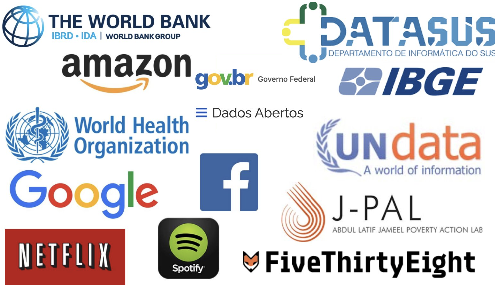
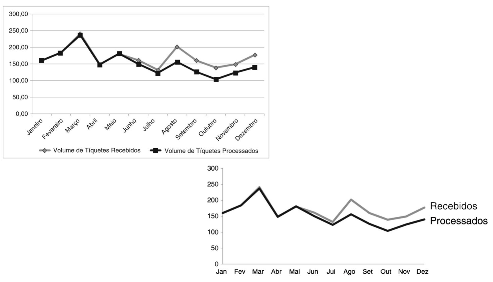
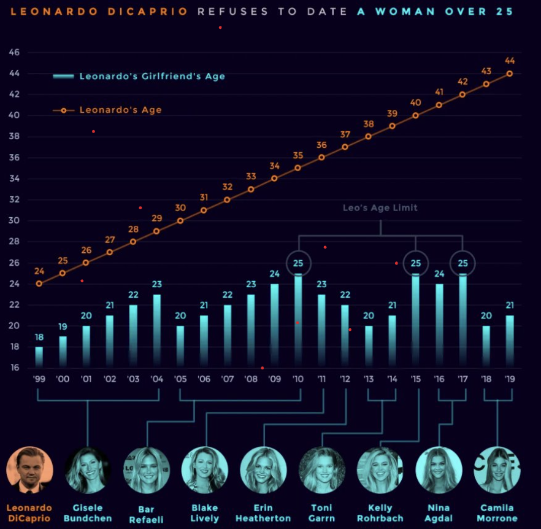
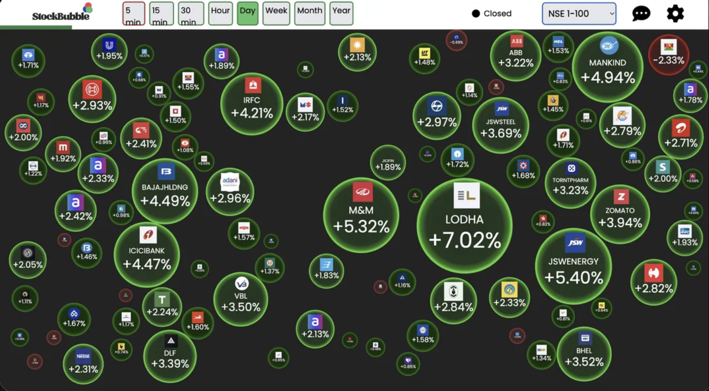
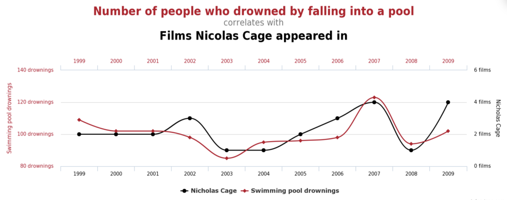
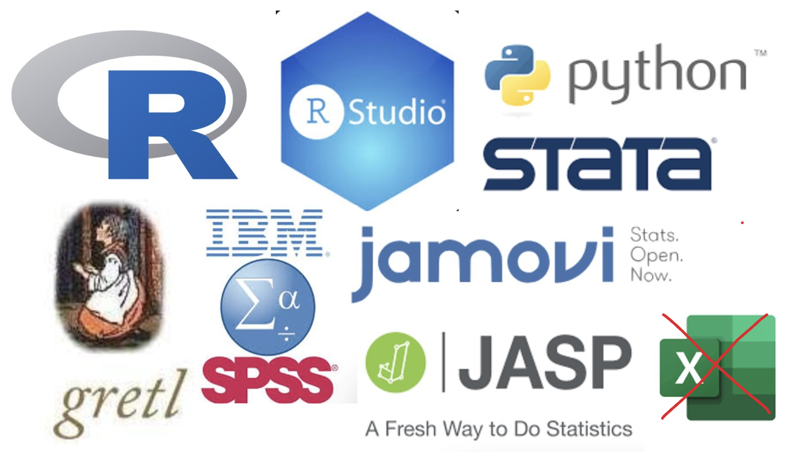
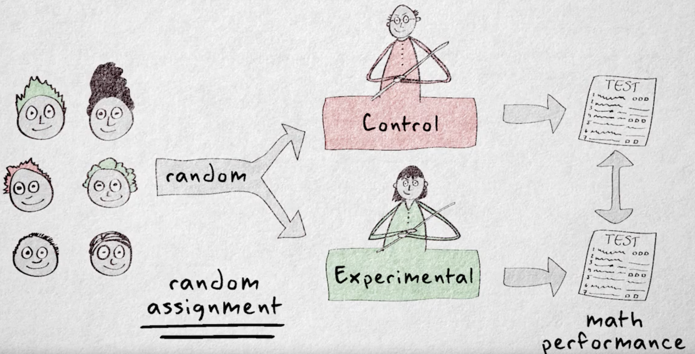
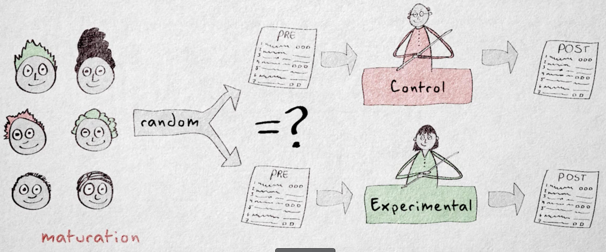
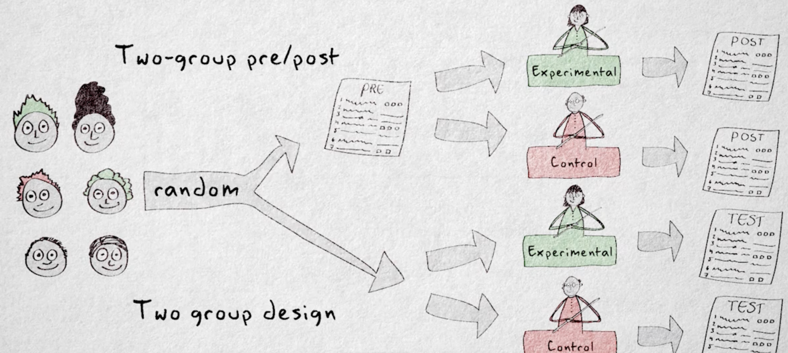
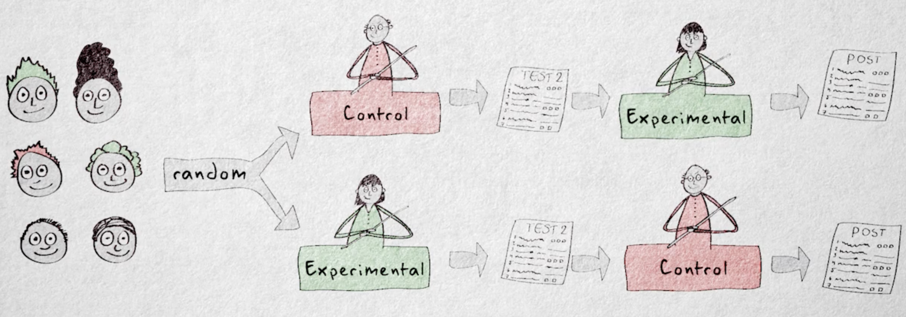

ggplot(mtcars, aes(x=factor(cyl), y=mpg)) +
geom_boxplot() +
coord_cartesian(ylim=c(12, 30)) + # Manipulação do eixo Y para criar falsa percepção de grande diferença
labs(title="Gráfico Enganoso: Milhas por Galão por Número de Cilindros",
x="Número de Cilindros",
y="Milhas por Galão (mpg)") +
theme_minimal()Aula 1 - Causalidade
Fernando Lhamas
Dados são abundantes

Big data
Brasil se associa ao maior centro científico do mundo, o CERN https://shorturl.at/13H75.
Quanto temos de dados no mundo? https://rivery.io/blog/big-data-statistics-how-much-data-is-there-in-the-world/
Neste novo milênio, no que diz respeito à geração e disponibilidade de dados, a humanidade tem presenciado e aprendido a conviver com a ocorrência simultânea de cinco características, ou dimensões: volume, velocidade, variedade, variabilidade e complexidade dos dados. Para este conjunto de características nomeamos como big data.
Precisamos ser capazes de elaborar os mais diversos testes e modelos apropriados e robustos a cada situação e de acordo com o que o pesquisador e o tomador de decisão necessitam. E essas são as principais razões que têm levado organizações atuantes nos mais diversos setores a investirem na estruturação e no desenvolvimento de áreas multidisciplinares conhecidas por Business Analytics, que possuem o objetivo principal de analisar dados e gerar informações, permitindo a criação de uma capacidade preditiva em tempo real da organização frente ao mercado e aos competidores.No ambiente acadêmico, obviamente, não pode ser diferente.
Dados contam histórias

Fonte: Knaflic, Cole. Storytelling com dados. Rio de Janeiro: Alta books, 2017.

Dados contam histórias e são bonitos

Dados contam histórias e são bonitos
Livro https://tellingstorieswithdata.com/
Gráficos do livro storytelling with data https://github.com/adamribaudo/storytelling-with-data-ggplot
Galeria de gráficos por tipo https://r-graph-gallery.com/
Gerador de paleta de cores https://coolors.co/
Dados podem ser enganosos
Correlação espúria

Correlação x Causalidade
- Correlação não é causalidade
- Uma história de causa e efeito pode ser só uma anedota
- Usar dados sofisticados não garante que o estudo é de causalidade
- Usar regressão não garante que o estudo é de causalidade
As mais interessantes hipóteses descrevem relações causais. Se conhecemos o que causa um efeito, podemos prever, influenciar, melhorar e entender o fenômeno estudado.
Correlação x Causalidade
Critérios para determinar causalidade
- Causa e efeito estão conectados
- A causa precede o efeito
- Causa e efeito ocorrem juntas consistentemente. Ou seja, quando a causa está presente, esperamos ver o efeito e, quando a causa não está presente, esperamos ver menos o efeito, em grau similar ao que a causa influencia.
- Explicações alternativas devem ser possíveis.
O que precisamos aprender?
- Como modelamos matematicamente a partir dos dados?
- Probabilidade
- Como sumarizamos e descrevemos os dados?
- Análise exploratória de dados
- Como encontramos padrões entre variáveis
- Análise multivariada
- Psicometria
- Econometria
- Machine Learning
O que precisamos aprender?
- Como trabalhamos com causalidade?
- RCTs, teste AB e outros designs de estudo
- Construir argumento contextualizado de causa e efeito
- Regressões
- Como comunicamos os resultados?
- Produtos de dados
- Gráficos e tabelas informativos e que geram insights
- Linguagem clara e concisa
Quais ferramentas utilizamos na prática?
- R (Análise de dados)
- Quarto (produto de dados)
- Github (versionamento de código)
- Ferramentas de pré-registro
- IA na maioria das fases de pesquisa
Ferramentas de análise de dados

Por que o R?
- Transparência
- Replicabilidade
- Mais utilizado em análise de dados
- Preferencialmente adotado em pesquisas
- Mais adequado para ciência aberta
Métodos não-científicos
- Pessoas podem aceitar algo como verdade baseado em intuição ou crenças.
- Podemos melhorar nossa verdade com um número de pessoas que também acreditam e entram em consenso.
- Outra fonte de conhecimento é por uma figura de autoridade.
- Uma melhor fonte de conhecimento é a observação causal, mas ainda não parece suficiente, pois normalmente observamos mal.
Método científico
O que precisamos para desenvolver conhecimento acurado é de observação sistemática, livre de viéses, combinado com aplicação lógica consistente. Em outras palavras, precisamos do método científico.
- A hipótese precisa ser empiricamente testável.
- O estudo e seus achados devem ter replicabilidade.
- O estudo deve ter objetividade, pode ser repetido.
- O estudo precisa ter transparência.
- As hipóteses devem permitir falseabilidade.
- As hipóteses devem ter consistência lógica.
- Hipótese é uma declaração que descreve um padrão ou relação geral entre propriedade.
- Teorias nas ciências sociais são as melhores explicações para um fenômeno em um dado momento, pois as hipóteses sobreviveram consistentemente ao escrutínio do método científico.
- O conhecimento é adquirido através do ciclo empírico, com as fases: Observação, indução, dedução, experimentação e avaliação.
Critérios do método científico
Além de seguir o ciclo empírico, para que o estudo seja convincente, precisamos atender critérios de avaliação:
- Confiabilidade: O estudo deve poder ser repetido de forma que possamos encontrar resultados similares.
- Validade: A conclusão sobre uma hipótese deve refletir de forma acurada a realidade.
Critérios do método científico
Validade de construto: As hipóteses devem ser mensuradas e manipuladas de forma acurada. Devemos ter bons instrumentos de pesquisa e interveções que realmente auxiliam a encontrar o efeito caso ele exista.
Validade interna: Se uma hipótese se refere a uma relação causal, a validade interna é importante, pois descreve se o efeito encontrado é da causa hipotética. Explicações alternativas são ameaças a validade interna.
Validade externa: O quanto as relações hipotéticas se sustentam em outros objetos de estudo e contextos. É o fator generalizável.
Ameaças a validade interna - participantes
Maturação: Condições naturais podem ser uma explicação alternativa para diminuir ou aumentar o efeito. Ex: Consumerismo incentivado por produtos de mídia. Prevenção: Ter um grupo de controle.
Seleção: Diferenças sistemáticas entre os sujeitos da pesquisa entre os grupos. Ex: Pessoas com maior renda tem mais facilidade de adotar um estilo de vida consumerista. Prevenção: Randomização.
Ameaças a validade interna - instrumentos
Validade de construto baixa: Há um viés sistemático que pode estar vindo de um construto não hipotetizado. Ex: Os produtos de mídia estão manipulando o status social. Prevenção: Considerar outros construtos que podem ser afetados pela manipulação e medi-los.
Instrumentação: Mudança no instrumento de pesquisa durante a pesquisa. Ex: Sua pesquisa utiliza um questionário de um orgão internacional sobre consumerismo. Durante a pesquisa, o orgão muda o instrumento e retrata o anterior. Prevenção: Verificar se o instrumento já está consolidado na literatura.
Ameaças a validade interna - instrumentos
- Testagem: O efeito da testagem pode sensibilizar o grupo experimental a obter resultados desejáveis, tendo maior motivação do que o grupo de controle. Ex: Ao saber que seu comportamento está sendo mensurado, o participante do grupo experimental se sente mais motivado a adotar um estilo de vida mais sustentável. Prevenção: Considerar um design de estudo que não tenha pré-teste.
Ameaças a validade interna - outras ameaças
- Ao saber que está conduzindo um experimento, o pesquisador pode ter ações não naturais, assim como os participantes. Prevenção: Design de pesquisa duplo-cego.
- Qualquer evento não previsto que afete as condições do estudo e que acontece durante a intervenção. Prevenção: Identificar possíveis elementos de riscos.
- Precedência temporal ambigua: Se não estiver claro que a causa realmente precede o efeito. Prevenção: Manipular a causa ajuda a controlar esta explicação alternativa.
Terminologia de variáveis
- Construto indica uma propriedade em geral do fenômeno que pode ser expressada de diversas formas.
- Variáveis são versões operacionalizadas de um construto, que podem ser medidas e manipuladas.
- Se alguma propriedade não apresenta variabilidade, então ela pode ser tratada como uma constante.
- Variáveis observáveis são aquelas que podemos medir diretamente.
- Variáveis não-observáveis são formadas por um conjunto de características observáveis. São também chamadas de dimensões ou construtos.
Variáveis de interesse
- Variáveis de interesse: São as variáveis presentes nas hipóteses.
- Variável independente é a variável de causa ou precedente. Também chamada de entrada, preditora e explicativa.
- Variável dependente, por sua vez, é a variável resposta ou de efeito.
- Variável mediadora é um elo entre uma variável independente e dependente explicando o motivo ou como a relação causal ocorre.
- Variável moderadora altera a força ou sentido da relação entre uma variável independente e dependente.
Variáveis de desinteresse
- Confundidora: Uma variável que pode afetar parcialmente ou totalmente as variáveis de interesse. Normalmente não são incluídas nas hipóteses nem mensuradas.
- Controle: Uma variável que pode afetar parcialmente ou totalmente as variáveis de interesse, mas são mensuradas.
- Background: Uma variável que não está relacionada diretamente as variáveis de interesse, mas ajudam a determinar o quão representativo é o grupo de participantes.
Designs de pesquisa
- Pesquisas experimentais maximizam a validade interna. Conhecidas como RCTs (Randomized Controlled Trials).
- Um experimento precisa de três componentes: manipulação, comparação e randomização.
- O experimento cria uma situação em que a variável causal está presente; Compara uma situação sem a causa e com a causa, neutralizando a ameaça por maturação; Seleciona as observações de forma aleatória e usando variáveis de controle.
Estratégias experimentais
Design fatorial:Há uma série de variáveis independentes sendo analisadas simultaneamente durante o experimento, inclusive combinando níveis das variáveis independentes (constraste). Ex: Testar um mix de produção em diferentes velocidades e quantidades produzidas.
Design de medidas repetidas: As mesmas observações são testadas em diferentes momentos do experimento, permitindo comparações diretas de antes e depois. Ex: Testar a aprendizagem dos alunos antes e depois de uma metodologia de ensino ser aplicada.
Como cientistas sociais fazem experimentos?
RCTs: Distribuição aleatória em grupos de tratamento (recebe tratamento) e grupos de controle.
Quasi-experimentos: Sem aleatorização completa, mas com grupos de controle e tratamento. Normalmente, são utilizadas técnicas para estabelecer condições de controle e tratamento adequados (PSM e Diff in Diff).
Campo x Laboratório
Experimentos de Campo: Intervenção aplicada no mundo real.
Alta validade externaExperimentos naturais: Explora eventos do mundo real que criam grupos de tratamento e controle de forma não intencional. Alta validade externa e ecológica.
Experimentos Laboratoriais: Experimento em ambientes controlados. Alta validade interna e baixa validade ecológica.
Como manipular as variáveis independentes?
- Os níveis da variável independente são determinados pelo pesquisador.
- A manipulação também ajuda a controlar variáveis externas, mantendo constante e evitando explicações alternativas.
- Manipulação também é conhecida como condições do estudo.
- Algumas variáveis não podem ser manipuladas.
- Variáveis de diferenças individuais podem ser manipuladas: São propriedade intrinsecas das observações. Ex: Auto-estima, Atitude, Personalidade, etc.
Designs experimentais
Design de dois grupos: 1 grupo de controle e 1 grupo experimental. Tem um pós-teste após a exposição do efeito.
Design de dois grupos pre-post: Adiciona-se um pré-teste ao design de dois grupos para medir alterações.
4 grupos de Solomon: O experimento é operacionalizado duas vezes, sem o pré-teste e com o pré-teste.
Design de medidas repetidas: Todos os participantes são expostos a todos os níveis de variáveis independentes.
Design de dois grupos

Design de dois grupos pre-post

4 grupos de Solomon

Design de medidas repetidas

Designs quasi-experimentais
- Podemos ter o mesmo que design de dois grupos, mas sem a aletorização.
- Podemos ter o mesmo que design de dois grupos pre-post, mas sem ter grupos equivalentes, pois não há aleatorização.
- Podemos ter uma série temporal antes e depois da intervenção, sem grupo de controle. Ex: nova legislação de trânsito.
- Podemos ter a mesma série temporal replicada pelo menos uma vez. Ex: Política estadual comparada a outro estado sem esta política.
Designs quasi-experimentais

Designs correlacionais
Estes estudos não aplicam nenhuma forma de manipulação das variáveis independentes. Nestes designs as relações causais devem ser feitas com mais precaução, pois há várias ameaças a validade interna. Também são chamados de estudos de survey ou pesquisa de survey.
Estudo Cross-Sectional
flowchart TD A[Tempo Único] --> O1[Observação 1] O1 --> O2[Observação 2] O2 --> O3[Observação 3] O3 --> O4[Observação 4] O4 --> O5[Observação 5] %% Ajuste do tamanho das caixas classDef largeBox fill:#bbf,stroke:#333,stroke-width:2px, font-size:16px, width:150px, height:50px; class A,O1,O2,O3,O4,O5 largeBox;
Estudo de séries temporais
flowchart LR A[Observações] --> O1[Tempo 01] O1 --> O2[Tempo 02] O2 --> O3[Tempo 03] O3 --> O4[Tempo 04] O4 --> O5[Tempo 05] %% Ajuste do tamanho das caixas classDef largeBox fill:#bbf,stroke:#333,stroke-width:2px, font-size:14px, width:150px, height:50px; class A,O1,O2,O3,O4,O5 largeBox;
Estudo em painel
flowchart TD
subgraph T1 [Tempo 05]
O1_1[Observação 1] --> O2_1[Observação 2]
O2_1 --> O3_1[Observação 3]
O3_1 --> O4_1[Observação 4]
O4_1 --> O5_1[Observação 5]
end
subgraph T2 [Tempo 04]
O1_2[Observação 1] --> O2_2[Observação 2]
O2_2 --> O3_2[Observação 3]
O3_2 --> O4_2[Observação 4]
O4_2 --> O5_2[Observação 5]
end
subgraph T3 [Tempo 03]
O1_3[Observação 1] --> O2_3[Observação 2]
O2_3 --> O3_3[Observação 3]
O3_3 --> O4_3[Observação 4]
O4_3 --> O5_3[Observação 5]
end
subgraph T4 [Tempo 02]
O1_4[Observação 1] --> O2_4[Observação 2]
O2_4 --> O3_4[Observação 3]
O3_4 --> O4_4[Observação 4]
O4_4 --> O5_4[Observação 5]
end
subgraph T5 [Tempo 01]
O1_5[Observação 1] --> O2_5[Observação 2]
O2_5 --> O3_5[Observação 3]
O3_5 --> O4_5[Observação 4]
O4_5 --> O5_5[Observação 5]
end
%% Ajuste do tamanho das caixas
classDef largeBox fill:#bbf,stroke:#333,stroke-width:2px, font-size:14px, width:150px, height:50px;
class T1,T2,T3,T4,T5,O1_1,O2_1,O3_1,O4_1,O5_1,O1_2,O2_2,O3_2,O4_2,O5_2,O1_3,O2_3,O3_3,O4_3,O5_3,O1_4,O2_4,O3_4,O4_4,O5_4,O1_5,O2_5,O3_5,O4_5,O5_5 largeBox;
Outros designs
- Pesquisas de avaliação: Tem foco na investigação da efetividade de processos, programas e políticas, focados em resolver um problema específico.
- Estudos de validação: Tem foco na qualidade de um instrumento de pesquisa e em validar relações teóricas entre construtos. também conhecido como validação de escalas de mensuração.
Verificando causalidade
\[ Y = \alpha + \beta . X \]
Técnicas em experimentos de campo e naturais
Propensity Score Matching ou pareamento
- Cria um grupo de controle artificial pareando indivíduos com características semelhantes.
- Exemplo: Avaliar o impacto de um programa educacional em escolas, comparando os alunos que participaram com aqueles que não participaram, mas que têm características semelhantes.
- Quando Usar: Quando há um grande número de variáveis observáveis que podem influenciar a alocação no grupo de tratamento.
Técnicas em experimentos de campo e naturais
Diff in Diff ou Diferenças em diferenças
- Compara a diferença de resultados entre dois grupos (tratamento e controle) antes e depois de uma intervenção.
- Exemplo: Avaliar o impacto de uma nova política salarial em uma empresa, comparando o aumento de salários antes e depois da política com uma empresa que não implementou a política.
- Quando Usar: Quando há dados disponíveis antes e depois da intervenção para grupos de tratamento e controle. Normalmente, é combinado com PSM.
Técnicas em experimentos de campo e naturais
Variáveis instrumentais
- Uma variável instrumental é usada para isolar a variação no tratamento que é exógena (não correlacionada com o erro).
- Exemplo: Estudar o efeito da educação sobre os salários, onde a distância até a escola pode ser usada como uma variável instrumental para a educação, já que afeta a probabilidade de frequentar a escola, mas não afeta diretamente os salários.
- Quando Usar: Quando existe uma variável instrumental válida que afeta o tratamento.
Técnicas em experimentos de campo e naturais
Regressão discontínua
- Explora um limiar arbitrário para designar indivíduos para o grupo de tratamento. As unidades próximas ao limiar são comparadas.
- Exemplo: Comparar alunos que quase receberam uma bolsa de estudos (mas ficaram logo abaixo da nota de corte) com aqueles que a receberam (logo acima da nota de corte).
- Quando Usar: Quando há um critério de elegibilidade objetivo que determina quem recebe o tratamento.
Técnicas em experimentos de campo e naturais
Controle sintético
- Combina dados de várias unidades de controle para criar um grupo de controle “sintético” que se parece com o grupo de tratamento antes da intervenção. A ideia é que o controle sintético seja uma média ponderada das unidades de controle.
- Exemplo: Avaliar o impacto de uma nova política ambiental em um país, criando um país sintético.
- Quando Usar: Quando há um grupo de tratamento único e não há um grupo de controle claro, mas há unidades comparáveis.